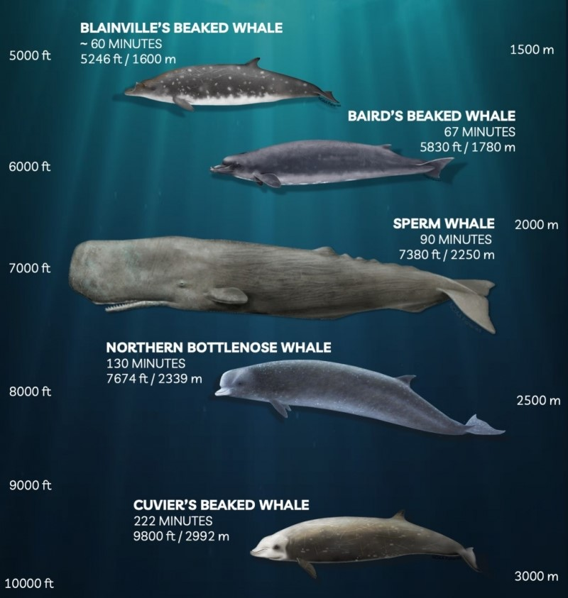
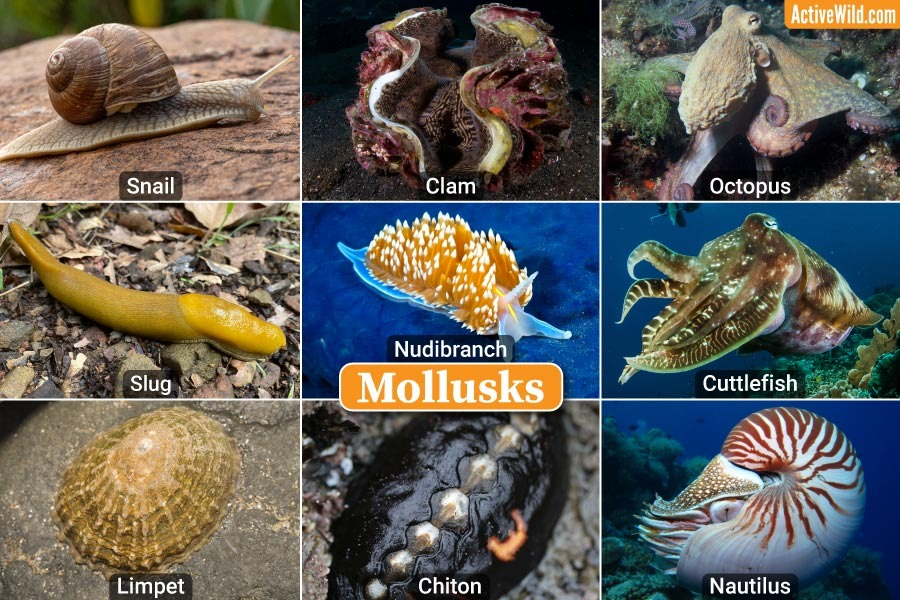
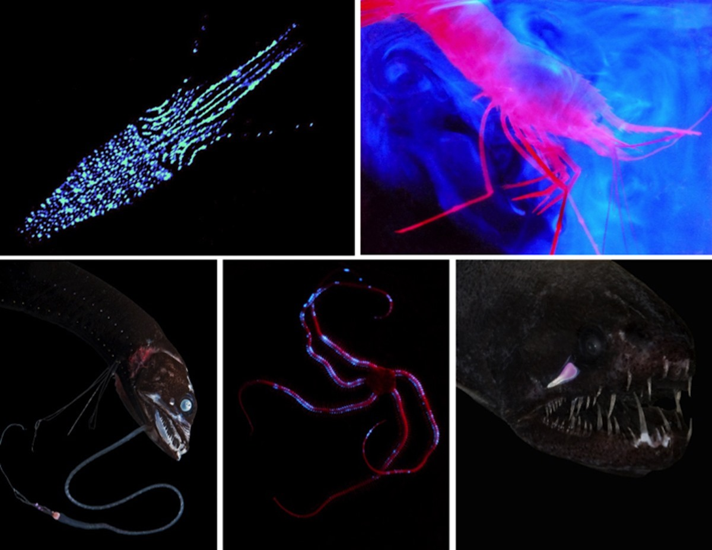
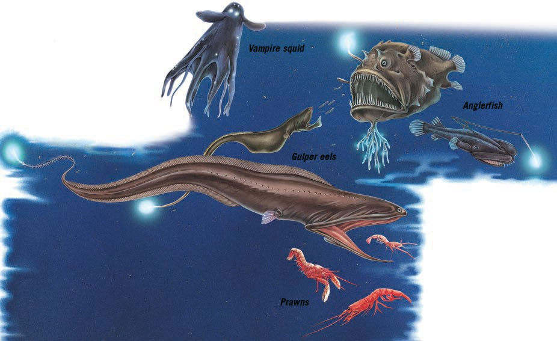
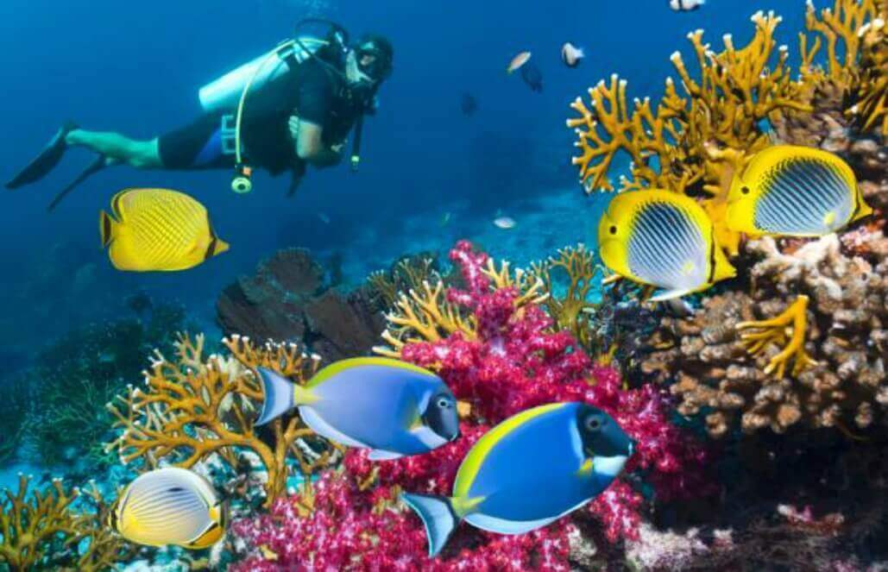

Deep-sea animals live in almost the most extreme habitat found on Earth, where sunlight fluctuates near freezing temperatures and immense pressure. The creatures have thus adapted themselves to feed, avoid predation, and thrive in total darkness.

Some creatures have a soft body and do not have air-filled cavities for withstanding pressure.

Several species display bioluminescence for attracting prey or communicating.

The slow metabolism can reduce energy intake, making the deep sea animals capable of surviving under exceptionally harsh and deficient supply conditions with only minimal food intake.
The bioluminescent lure of the anglerfish, produced by symbiotic bacteria, mimics the rhythmical light flashes of other organisms, tempting unaware fish to approach.
The extensible mouth of the gulper eel allows it to consume large prey entirely, which maximizes the high/premium food ingestion in its scarce deep-sea habitats.
The vampire squid, thanks to its bioluminescence, emits several glowing particles into the surrounding water and flashes light to startle or distract its aggressors in order to escape into the darkness of the deep sea.

To protect deep-sea habitats, pollution must be reduced by limiting the entry of plastic and industrial chemical wastes into the environment that will be threatening to marine life. The research and monitoring activities, in this manner, assist scientists in understanding the deep-sea ecosystems, their biological diversity, and their contribution to the global environment. These activities thus serve as a basis on which conservation strategies can be developed for the long-term survival of deep-sea species.
